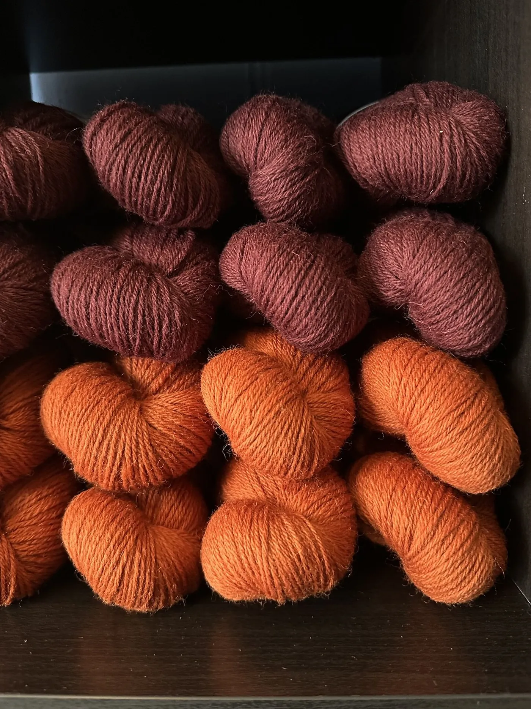
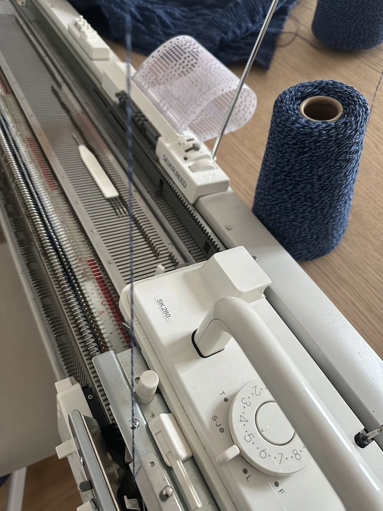
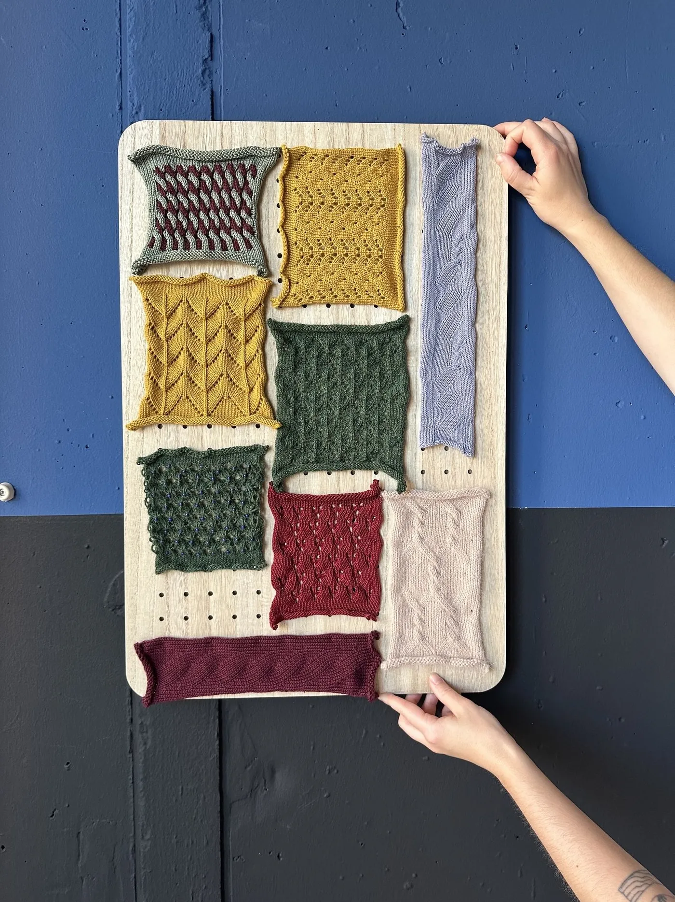
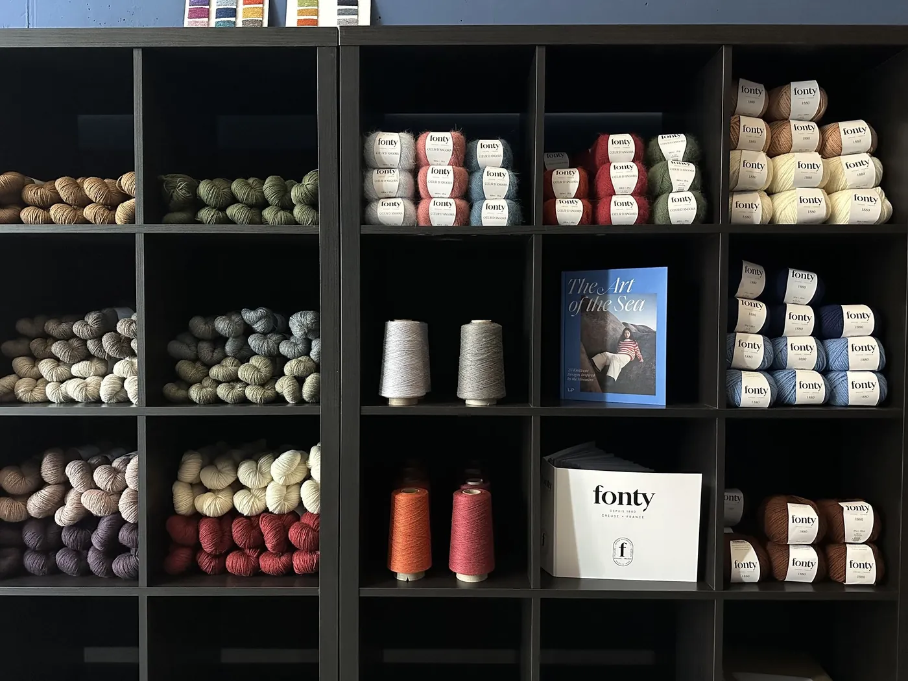
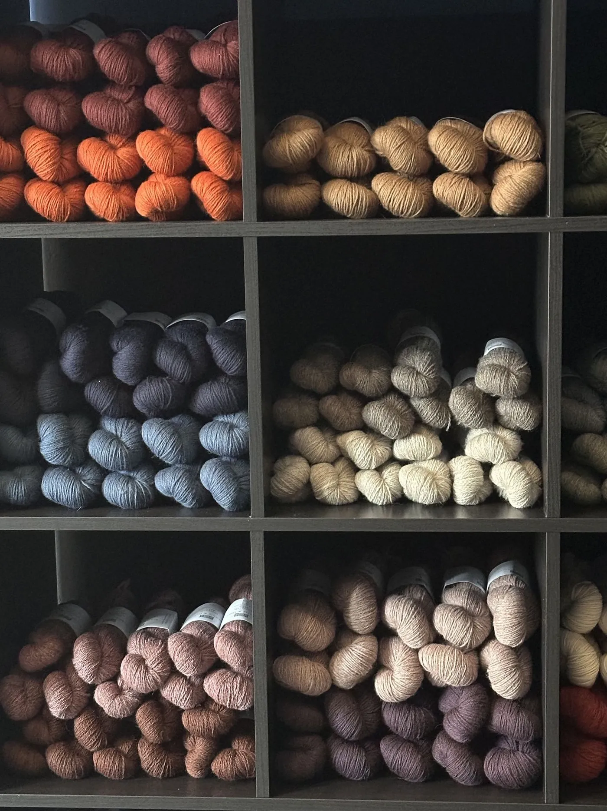
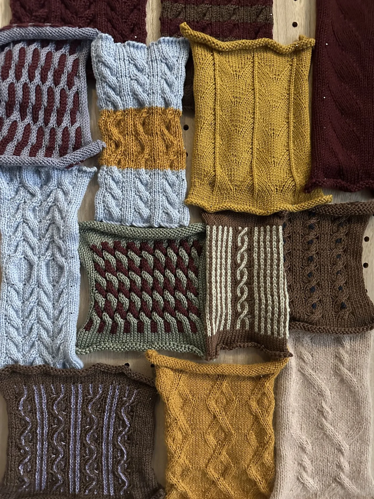

Laine traçable
Des fournisseurs européens qui utilisent de la laine de moutons régionale, avec une chaîne de transformation locale ou verticale.
Notre site e-commerce est là. Ouverture de la boutique physique prévue fin novembre.

Lausanne · Ateliers & boutique
Ateliers de tricot sur machine et boutique de laine éthique et responsable.
Des fournisseurs européens qui utilisent de la laine de moutons régionale, avec une chaîne de transformation locale ou verticale.
Une technique encore un peu méconnue en Suisse, enseignée pour se lancer dans un premier projet en toute confiance.
Chaque atelier comprend deux heures de location de machine gratuites, pour tester les techniques apprises.
Vous avez une machine sans savoir l'utiliser, vous hésitez à en acheter une, ou vous manquez simplement de place chez vous : le studio est fait pour ça.

Apprenez à utiliser une machine à tricoter et développez vos propres techniques. Des cours pour tous les niveaux, débutants ou déjà expérimentés.
Réserver une place
Ouverte à celles et ceux qui ont déjà de l'expérience ou qui ont suivi l'un des cours, avec de l'aide pour votre projet à chaque étape.
Demander un créneau
Des laines choisies pour leur traçabilité, en ligne dès maintenant et bientôt au studio, Chemin de la Colline à Lausanne.
Voir les lainesLa boutique
Six maisons choisies, du lace à l’aran, en ligne dès aujourd’hui.
Aussi : Soft Donegal, Cœur d'Angora, 1880, Merlin, Dune, Nature, Névé, Darnie.


« Apprenez à utiliser une machine à tricoter et développez vos propres techniques ! »
Knit It Studio
Réserver un atelierChemin de la Colline 1C
1007 Lausanne
Ouverture de la boutique prévue fin novembre.